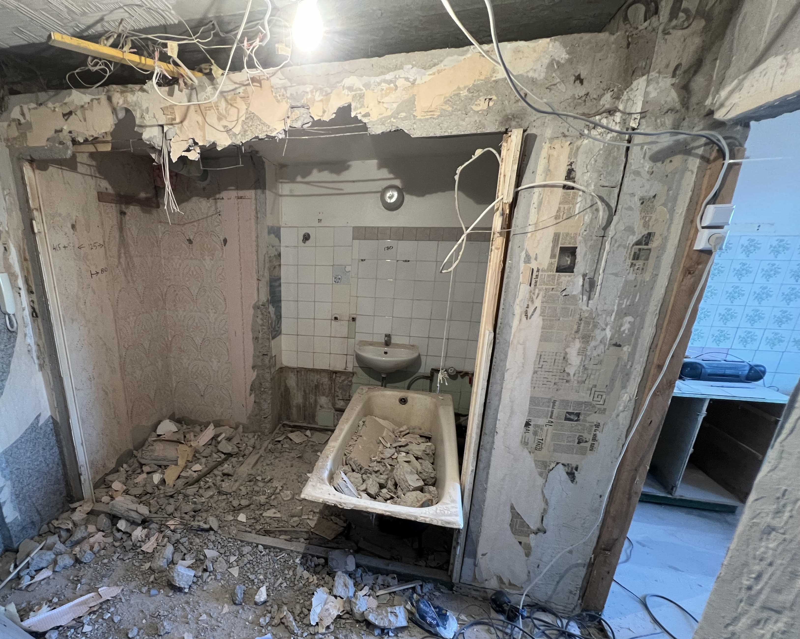

Lammutustööd Tallinnas ja Harjumaal
Korterite, vannitubade ja väiksemate konstruktsioonide kontrollitud lammutus.

Lammutustööd peavad olema kontrollitud, ohutud ja hästi planeeritud, eriti kortermajades ja renoveeritavates ruumides. Renoveeri Kodu teeb siselammutust, vana viimistluse eemaldamist, vannitubade tühjendamist ja ehitusprahi organiseeritud äravedu Tallinnas ning Harjumaal.
Enne lammutust hindame konstruktsioone, kommunikatsioone ja ligipääsu. Nii väldime kahju kandvatele osadele, torustikule, elektrile ja naaberruumidele.
Mida teenus sisaldab?
- vana plaatkatte, parketi, kipsi ja viimistluse eemaldus
- vannitubade, köökide ja korterite siselammutus
- väiksemate vaheseinte ja konstruktsioonide eemaldus
- ehitusprahi sorteerimine ja äraveo korraldus
Millal seda tellida?
Lammutustöid tellitakse tavaliselt enne vannitoa remonti, korteri kapitaalremonti või uue põranda ja seinte paigaldust. Õigesti tehtud lammutus kiirendab järgnevaid töid ja vähendab ootamatuid lisakulusid.
Tööprotsess
Objekti ülevaatus
Kontrollime, mida võib eemaldada ja millised osad vajavad säilitamist või eraldi spetsialisti hinnangut.
Kaitse ja lammutus
Katame säilivad pinnad, sulgeme vajadusel tööala ja teeme lammutuse järjekorras, mis hoiab tolmu ning riski kontrolli all.
Koristus
Kogume prahi, sorteerime materjalid ja jätame pinna valmis järgmisteks ehitustöödeks.
Lammutustööde hind ja ohutus
Lammutustöö hind sõltub eemaldatavate materjalide mahust, korrusest, ligipääsust, prahi äraveost ja sellest, kas töö toimub kortermajas või eramajas. Enne töö algust tuleb selgeks teha, kus asuvad torud, elektrijuhtmed ja konstruktsioonid, mida ei tohi kahjustada.
Töö käigus hoiame säilivad pinnad kaitstuna ja püüame tolmu levikut piirata. Pärast lammutust on oluline, et objekt jääks järgmistele töödele loogilisse seisu: aluspind nähtav, ohtlikud jäägid eemaldatud ja tööala koristatud.
Kohalik kogemus ja tööde täpsustamine
Lammutustöödel on kortermajades oluline naabrite, trepikoja ja prahi liikumistee arvestamine, et töö oleks kontrollitud ja ohutu. Päringu hindamisel vaatame alati, milline on objekti ligipääs, kas töö toimub elatud ruumis, millised pinnad vajavad kaitsmist ja milline on mõistlik tööjärjekord. See aitab vältida olukorda, kus üks etapp tuleb hiljem uuesti avada või parandada.
Renoveeri Kodu eesmärk on anda selge ja realistlik hinnang enne töö alustamist. Kui fotodest ei piisa, lepime kokku objekti ülevaatuse. Nii saab täpsustada materjalid, ajakulu, seotud teenused ja võimalikud riskikohad enne, kui töö päriselt käima läheb.
Korteri lammutamisel on kasulik enne kokku leppida, millised elemendid jäävad alles: uksed, aknad, torud, põrand või mööbel. See vähendab eksimuste riski ja aitab töömeeskonnal eristada eemaldatavad kihid säilitatavatest pindadest.
Lammutustööde hinnad
Lammutustööde hind sõltub eemaldatava materjali mahust, korrusest, ligipääsust, tolmukaitsest ja prahi äraveost. Kortermajades tuleb arvestada ka tööaegu, trepikoja kaitsmist ja prahi liikumisteed.
Hinnapäringu kiirendamiseks lisa võimalusel fotod, mõõdud, objekti asukoht ja soovitud tähtaeg. Nii saame paremini aru, kas töö vajab objektikülastust või saab esmase hinnangu anda kirjelduse põhjal.
Korduma kippuvad küsimused
Kas viite ehitusprahi ära?
Saame korraldada prahi kogumise ja äraveo vastavalt töömahule ning kokkuleppele.
Kas lammutust saab teha kortermajas?
Jah, kuid arvestame maja reegleid, müra aega, ligipääsu ja naabreid.
Kas kandvaid seinu võib eemaldada?
Kandvate seinte muutmine vajab projekti ja kooskõlastusi. Sellist tööd ei tee ilma vajaliku dokumentatsioonita.
Kas teete tolmukaitset?
Jah, vajadusel katame läbikäigud ja säilivad pinnad ning piirame tööala.